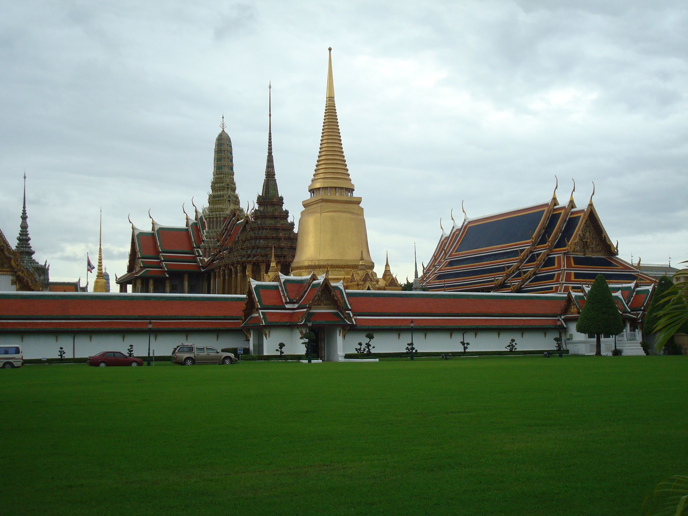

"There is something that shows me the way but I don't understand what that is. Despite the regular number of distractions, the obstacles that block my way, the breaks, the slowdowns and the laziness are able to distract me, this thing (maybe a demon or a good God that takes on different appearances depending on his mood, in my case it looks like an elephant, maybe Ganesha?) takes me back to shore and impose me to continue. I accept my fate and without saying a word, I pay my respect to the one that shows me the way. I look for myself without finding it. I look for the eternal challenge, driving away the sense of satisfaction. I seek continuity. Another island on the horizon, another lighthouse, another creature that takes shape where the sky and the sea cross paths. Hopefully also this time that good being will be there to wait for me". (PHUKET 19/10/13)
"Everything has a price. Unfortunately people forget that money only serves the purpose of satisfy human needs, the essential ones, the ones you can measure with the fingers of one hand, the vital ones. As a result you also have a price, you are a walking resource, you are a cash cow, an orange to squeeze. You are totally subordinated to us, because you are on an island, you asked to be taken here and you will ask to be taken away paying a price. Tell us how much you can offer and we will see if we can be helpful. In the meantime stay there, don't move and look at the constant flow of tourists that comes and go and try to quantify the human population, be amazed of the fact that it is so numerous, almost endless. Try to distinguish between the various ethnies the one that looks more available or more interesting. It is a stream that goes with the sea, it is a tide that rises and falls depending on the moons, it is an index of wealth, it is a countless number, it is everything and nothing at the same time. It is a constant wander from one place to another. It is a restless aging. It is a body that lies on the bottom of the sea". (PHUKET 22/10/13)

"Is the world spinning around me or I am going around the world? There are more than ten thousand different ways to move a body and this is one. To cover a space so wide, being stuck in such a small nook. A paradox. Like the malaise that pervades me everytime I make a move. A feeling of nausea that takes me to a forced sleep. A sign of change. Another spin of the wheel. And in the meantime the days are passing and my destiny is fullfilled". (KO LANTA 24/10/13)
"Krabi is the dullness that follows me everywhere I go. It is the moodiness hangover, the other side of the moon, the tv on mute and the duty to go on in the hope that there is something behind the corner and luckily there is always something behind the corner. So Krabi and the mangroves, Krabi and the missing goodbyes, Krabi and the random encounters, Krabi and staring at a point on the horizon that allows to focus on yourself and disappear. The noise of an engine that takes me from one side of the peninsula to the other, floating, swinging. Krabi is everything but also nothing. Krabi is the place that will be remembered in hindsight or maybe the place that in a few pages will not exist anymore. Or maybe in a few pages I will not even know if I do either still exist or not." (KRABI 26/10/13)

"Ko Pha Ngan is the calm after the storm that is not storm but only a heavy sky that suddenly decides to spare those poor folks, the dry sand, the low tide, the ferry that has already left even if you haven't noticed it yet because you feel like you didn't move. The same boat that takes you from one side to the other, from one island to the next; that unpaved road that makes you jump inspires you, the road that makes you bump hole after hole stimulates you. The movement is eternal and you can't stop it, same as the time. Physics can not be ruled I am sorry. What's left is a bunch of colourful stains from a jungle party, of a rythm that digs into the most intrinsic nature, that shocks the normal flow of things and that finally lets the rain fall, threatening and undefined". (KO PHA NGAN 29/10/13)
"Ode to the sea. Or better ode to this sea. Ode to all the creatures that live here, that feed us through their existential sacrifice, that make us laugh. Ode to all the various forms and colours, ode to the victims and the perpetrators. A postcard sent but left blank because at the end what really matters is the thought. So here is the grand finale: the first act ends under the sun, the actors go to drink a tea and the spectators clap without letting too much go because the books are closed at the end. This sea on the contrary will never end because it is endless. And if it is endless, I ask myself why I am the one and only that has to say goodbye, paradoxically ode to the sea". (KO TAO 04/11/13)
"The unexpected that characterize the trip. Everyone has his own reasons because there is no trip without unforeseen events. So here is the one when the skin starts to scratch, the bank account stops working, the local food allergies take over. So here the fever rises and so we must wait and stop everything, the race against time because of a visa that burns day after day has no more reasons to exist. It takes a back seat, same as the punctuality and the stubborness in edit a travel diary; surviving all of these gives a certain meaning to the trip, it makes it more personal. At the end I managed to catch up with the diary but now my skin just started to scratch again". (BANGKOK 08/11/13)
"The essential stop becomes a pure and simple stop-over, the power of a mute destiny still able to shape every trip I do according to its own will. The only thing left is to lock yourself inside a buddhist temple, like a political prisoner left to his own destiny. Monks have many many things to tell generally, even if they had to keep up with the society and modernize themselves. It looks like they lost their inner will and bend to tourism themselves. It looks like technology made them more human and less spiritual. I believe that monks should not be the one and only mere and sincere representation of God on earth". (CHANG MAI 10/11/13)
"And then Pai. The slow travel around the reflective and chaotic north goes on. It smells like China already although for this trip I'll have to wait twelve more years: the distance that takes to that imaginary line that shapes languages and cultures called border is now countable. On the contrary the nature stays the same: green ink that gets more and more intense during the climb, the sun appears and disappears, throwing its reflection on rice plantations. Strawberries grow along the sunset and the water paws to find her way. Something has changed: the clear necessity to break with an ordinary past, suddenly comes up." (PAI 13/11/13)
"I don't know if this page was supposed to be written. The destination has already been reached and to go back was a pure and simple routine. But there is still a lot to say starting from my exit of town, inesorable but also of little importance. People still smiling at me as long as I do not step on their feet. When in Rome you are supposed to do as the Romans, although feet have to stay on ground." (CHANG MAI 15/11/13)